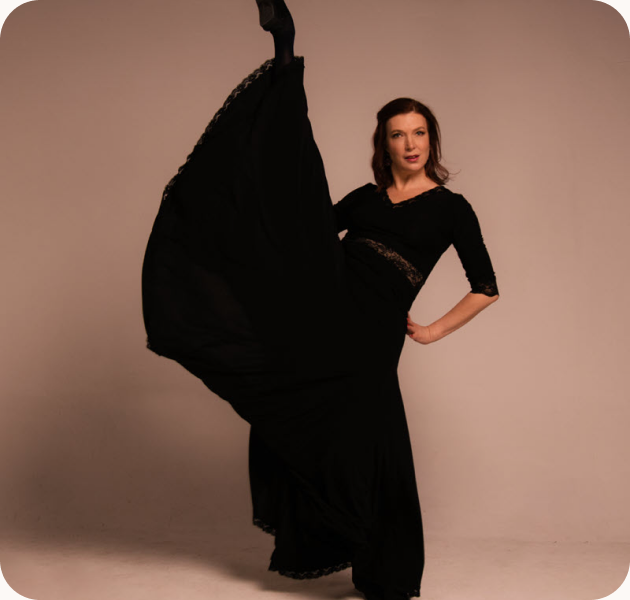
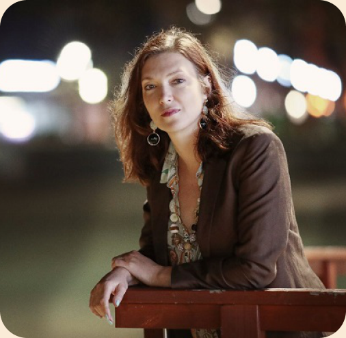
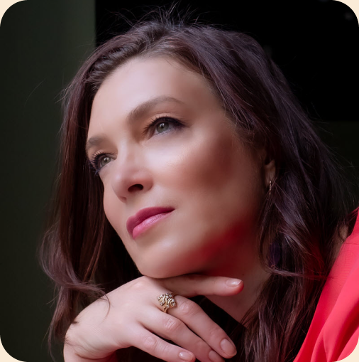

Балетная база
В основе подхода — уважение к академической школе, технике и профессиональной культуре танца.
Основатель и идейный руководитель ГРАНДБАЛЕТ, педагог, наставник и человек, который выстраивает образовательную систему школы и колледжа.
Мария Володина создала ГРАНДБАЛЕТ как пространство, где хореография становится не просто занятием, а полноценным путём развития ученика: от первых шагов в танце до профессионального образования и сцены.


Мария Володина — основатель ГРАНДБАЛЕТ и директор колледжа, который продолжает образовательную линию школы.
Её подход основан на уважении к классической хореографической школе, внимании к личности ученика и понимании того, что профессиональное образование требует не только техники, но и дисциплины, характера, культуры движения и бережного педагогического сопровождения.
ГРАНДБАЛЕТ создавался как пространство, где каждый ученик может пройти свой путь: заниматься для развития, готовиться к сцене или выбрать хореографию как будущую профессию.
Профессиональный путь Марии Володиной связан с балетом, сценой, педагогикой и развитием хореографического образования.
Этот опыт помогает выстраивать обучение так, чтобы ученик видел не только отдельные занятия, а целую систему: подготовку тела, развитие техники, сценическую практику, работу с музыкальностью и формирование внутренней дисциплины.
В основе подхода — уважение к академической школе, технике и профессиональной культуре танца.
Важна не только программа, но и то, как педагог видит ученика, объясняет материал и сопровождает развитие.
Хореография рассматривается как искусство, где техника соединяется с выразительностью и образом.
Школа и колледж выстроены как маршрут развития: от первых занятий до профессиональной подготовки.
Мария Володина определяет образовательную идею колледжа, его ценности, подход к развитию студентов и общий уровень требований к обучению.
Колледж ГРАНДБАЛЕТ создан для тех, кто хочет заниматься хореографией серьёзно. Поэтому здесь важно всё: программа, педагоги, дисциплина, атмосфера, внимание к здоровью и понимание будущего профессионального маршрута.
Основные задачи

В хореографическом образовании важны данные, физическая готовность и дисциплина. Но не менее важно увидеть потенциал ребёнка и помочь ему раскрыться.
Задача колледжа — не только оценить способности абитуриента, но и создать условия, в которых ученик сможет развиваться: укреплять тело, осваивать технику, понимать музыку, работать на сцене и расти как личность.
Важно заметить сильные стороны ученика и понять, как их развивать.
Ученик должен понимать, как занятия связаны с его будущим профессиональным маршрутом.
Регулярность, внимание и труд — основа хореографического образования.
Даже серьёзная подготовка должна оставлять место вдохновению, красоте и любви к танцу.
ГРАНДБАЛЕТ объединяет несколько уровней обучения: занятия для детей, направления для взрослых, подготовку к поступлению и профессиональное образование в колледже.
Такой подход помогает ученику двигаться постепенно. Сначала ребёнок знакомится с хореографией, затем укрепляет базу, получает сценический опыт, проходит подготовку и при желании выбирает профессиональный путь.
Знакомство с движением, музыкой, дисциплиной и основами хореографии.
Работа над осанкой, координацией, гибкостью, техникой и музыкальностью.
Усиление данных, знакомство с требованиями и подготовка к просмотрам.
Профессиональное образование, сценическая практика и движение к профессии.
На странице можно разместить фотографии Марии Володиной, кадры с занятий, выступлений, встреч с абитуриентами и событий колледжа.
Да, мы принимаем учеников любого уровня подготовки. У нас есть группы для начинающих как для детей, так и для взрослых. Педагоги подбирают нагрузку индивидуально.
Да, пробное занятие подходит для знакомства с колледжем.
Администратор поможет подобрать подготовительную программу.
Требования зависят от выбранной программы.
Расписание вступительных испытаний публикуется заранее.
Запись доступна через форму ниже.
Мы свяжемся с вами и уточним детали.

Занятия по направлению «Название услуги» помогают развивать осанку, гибкость, координацию, силу, музыкальность и уверенность в движении. Программа подбирается с учётом возраста, уровня подготовки и цели ученика.
Обучение проходит в комфортном темпе под руководством педагогов ГРАНДБАЛЕТ. На занятиях ученики постепенно осваивают базовые элементы, укрепляют тело, развивают выразительность и учатся работать с музыкой.
Этот блок можно редактировать через админ-панель и использовать для SEO-текста на страницах услуг.

Поможем подобрать направление, школу и комфортную группу по возрасту и уровню подготовки